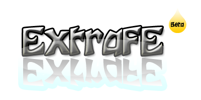

Release to public 20/02/2011
[ConfEditor]
[Add] à New side panel with setting for confEditor.
[Add] à Option to anable themes and choose themes.
[ConfEditor - Mame]
[Add] à New builds for Mame = MamePlus and MameXT.
[Add] à New roms path. Now you can add 9 paths and have new way of look. Now you can erase the path that you don’t like and get more information about rooms and paths.
[Add] à New statistics panel for database. More options and details.
[Add] à New paths for pcb,titles,scores.
[Add] à New panel with tools for mame. To see the information from History.da and Mameinfo.dat you must covert it so the ExtraFE can read it.
[Add] à In statistics you can find a wizard to create the filters for ExtraFe if you not do it in the start creation of database.
[Bug Fixes] à Transparent image for mame.
[Bug Fixes] à Bug fixes here and there.
[Bug Fixes] à The joystick.map and the effect.
[Bug Fixes] à Bugs in database, now smaller with more data.
[Remove] à Paths like inp,crosshair and videos. Videos not supporting (I hope in the next version ;) ).
[ConfEditor - pSX]
à New entry.
[ExtraFE]
[Add] à New graphics design with OpenGL instead of DirectX. (More Portable).
[Add] à New splash screen for loading procedure of ExtraFe.
[Add] à New menu for choosing emulator.
[Add] à Date and time from the user’s machine.
[Emulators - Mame]
[Add] à New smoother way movement from one game to another and one page to another.
[Add] à Information for every game.
[Add] à Simple effects and cube spinning image for screenshots.
[Add] à Virtual keyboard for searching a games.
[Add] à Fast search based in letter.
[Add] à Bigger image for better view.
[Add] à Now in snapshots you can see 9 images and reloads automatically in seconds.
[Add] à Create up to 255 folders to put inside your favorite games. One folder accepts every game supported by mame. You can erase or rename the folder.
[Emulators - pSX]
àNew entry.
Created with the Personal Edition of HelpNDoc: Free Web Help generator